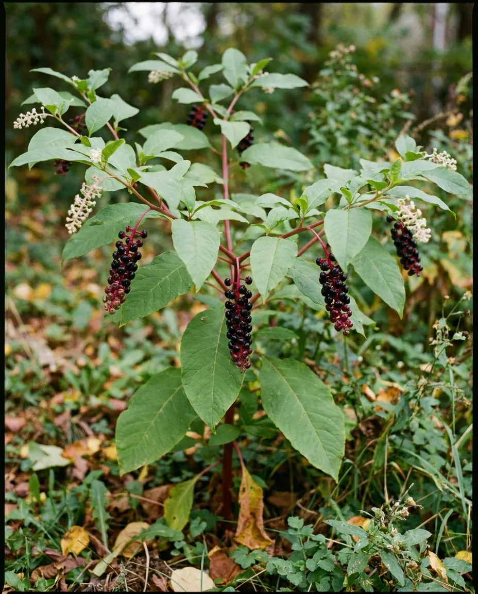
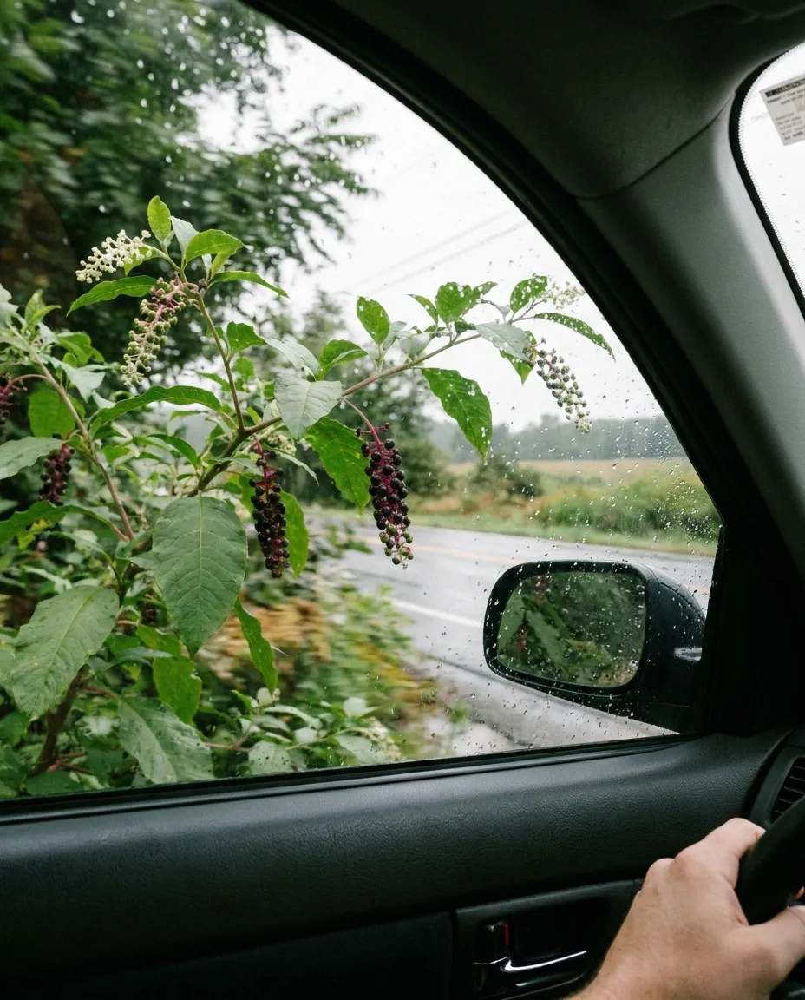

ЛАКОНОС
Описание программы "Лаконос"
Лаконо́с америка́нский или Фитола́кка америка́нская (лат. Phytolácca americána) — многолетнее травянистое декоративное растение, привлекательное и летом во время цветения, и осенью, когда образуются красивые крупные кисти темно-красных плодов.

Направления селекции:
- Засухоустойчивость
- Холодостойкость
- Зимостойкость
- Окраска кистей плодов
- Скороспелость
